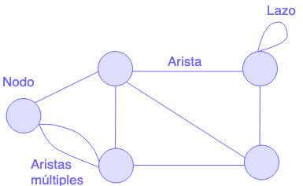

Sobre Grafos y Redes
¿Qué es un grafo?
Los grafos son estructuras gráficas que se conforman de nodos
conectados entre sí. Se pueden describir como mapas mentales que nos
ayudan a resolver varios tipos de problemas. Los grafos están
conformados por:
• Nodos. Son los
puntos del grafo.
• Aristas. Son las
conexiones entre los nodos.
•
Aristas paralelas o múltiples. Así se le
llama a un grafo en el cual dos o mas aristas unen dos nodos.
• Lazo. Éste forma
un bucle y pasa cuando una arista conecta a un mismo nodo

Conceptos de Grafos
Nomenclatura
¿Grafos o Redes? Usualmente se le llama
red cuando es un problema o sistema real,
mientras que el grafo es la representación
matemática de una red.
Otras formas de llamar a los Nodos, Aristas o Lazos es
vértices, arcos o enlace, y bucle
respectivamente.
Caminos
Un camino es una sucesión de aristas o arcos adyacentes. Cada arista y
lazo en un camino va a contar como 1. Vamos a decir que un camino es
simple si no se repite ninguna arista en el
camino, por consecuente un camino será
complejo si utiliza al menos dos veces una
misma arista, y por último un camino es
elemental cuando no pasa dos veces por
ningún nodo en el grafo.
Ciclo
Es una cadena finita cuyos vértices inicial y final coinciden.
Conexo
Es aquel grafo tal que, para todas las parejas de vértices
cualesquiera, están unidos por una cadena.
Árboles
Un árbol es todo grafo finito, conexo y sin ciclos.
• El vértice 0 representa la raíz del
árbol.
• Los nodos finales reciben el nombre de
hojas.
• Los demás nodos,
nodos de ramificación.
• Si un árbol tiene n nodos, tendrá n−1
aristas.
• Excluida la raíz, los demás vértices forman
subconjuntos disjuntos, cada uno de ellos árbol.
• Todo par de vértices están unidos por una
única cadena.

Recorriendo árboles
Hay tres formas de recorrer árboles
• Pre-orden:
En éste recorrido primero se visita el nodo raiz, y luego va visitando
nodo por nodo de izquierda a derecha. Es decir, primero visita el sub
árbol izquierdo y luego se va moviendo a la izquierda.
• Post-orden:
Éste recorrido es el opuesto del pre-orden. Aqui empezamos por los
hijos del sub árbol que se encuentre mas a la izquierda, los hijos de
este se van a contar de izquierda a derecha y de arriba hacia abajo,
cuando ya se hayan contado todos los hijos, procedemos con la raiz
del sub árbol. Luego pasamos a la derecha
del nodo raíz y hacemos lo mismo. Lo último que se cuenta es la raiz
del árbol.
• In-orden:
En éste recorrido primero va a ir lo mas a la izquierda posible,
partiendo del nodo raiz, cuando ya no se pueda ir mas a la izquierda
éste va a empezar a subir hasta encontrar una sub division a la
derecha, en caso de encontrarse un nodo a la izquierda de un sub arbol
se va a desviar.
Conoce más!
Para conocer mas de estos recorridos, visita los
ejemplos interactivos
Referencias
J. Rodríguez-Aragón, (2011) Teoría de Redes o grafos (pp. 7 & 19)
K. Ramírez (s.f) Teoría de Grafos y Árboles. Recuperado de:
http://www.kramirez.net/Discretas/Material/Presentaciones/Grafos.pdf
O. Cordón (s.f) Redes y sistemas complejos. Recuperado de:
https://sci2s.ugr.es/sites/default/files/files/Teaching/GraduatesCourses
/RedesSistemasCompejos/Tema02-AspectosBasicosdelasRedes-13-14.pdf
R. Familia (s.f) Teoría de Grafos. Recuperado de:
https://campusvirtual.unibe.edu.do/bbcswebdav/pid-122487-dt-content-rid-352591_1/courses/TI2215-771672-2019-3/Algoritmos7_1.pdf